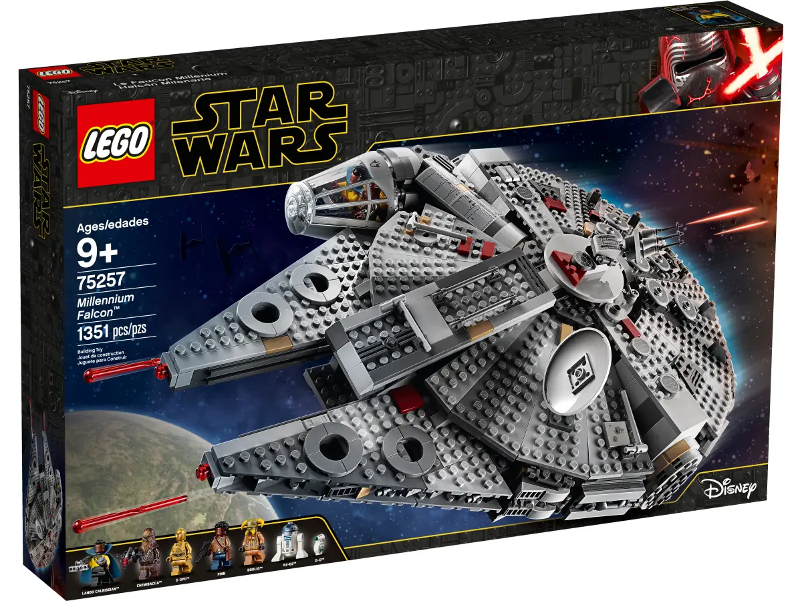
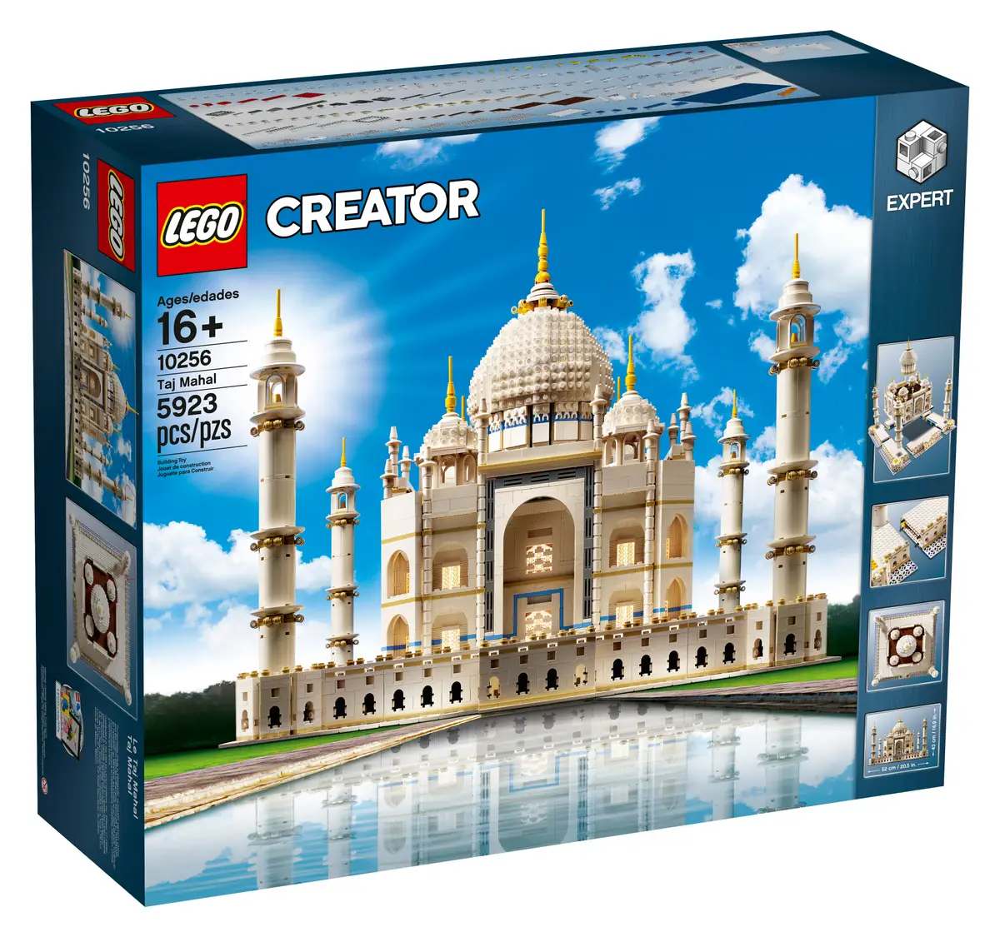
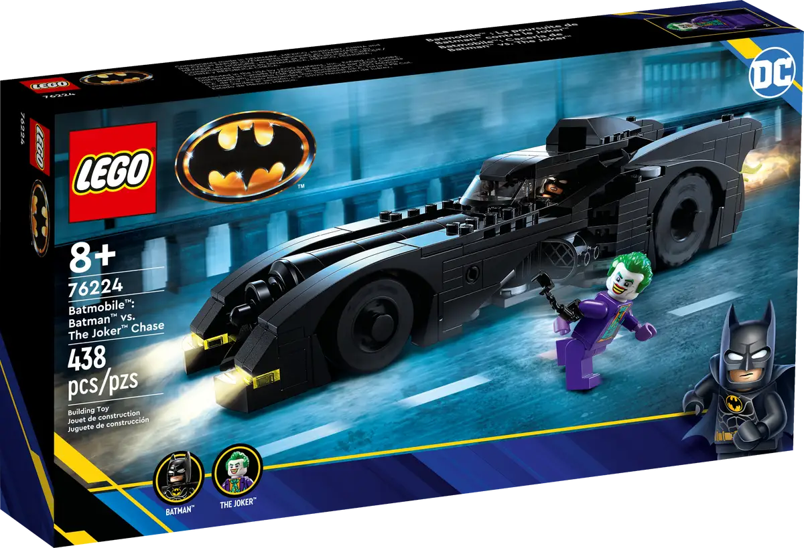

Explora algunos de los sets más populares y emblemáticos de LEGO. Desde vehículos hasta personajes de películas, LEGO ofrece una variedad de sets que fascinan tanto a niños como adultos.
Uno de los sets más icónicos de LEGO, basado en la famosa nave de Star Wars. Este set cuenta con más de 7,500 piezas.
Este set arquitectónico recrea el famoso monumento con más de 5,900 piezas. Es perfecto para los aficionados a la arquitectura.
Un set para los fans de Batman, el Batmóvil clásico incluye detalles minuciosos y figuras de Batman y el Joker.
